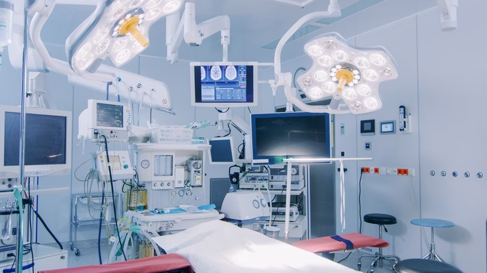

A practical day-by-day guide to recovery after keyhole surgery, including diet, activity, wound care and warning signs.
Laparoscopic, or keyhole, surgery is popular because it allows most people to recover faster than after open surgery. Even so, knowing what to expect helps you plan your time off, manage discomfort and spot problems early. This guide walks you through the typical recovery after common laparoscopic procedures such as gallbladder, hernia and appendix surgery.
The first day in hospital
After the operation, you are monitored in a recovery area until the anaesthesia wears off. Mild pain around the incisions is normal and is controlled with medicines. Some people feel shoulder-tip pain for a day or two, caused by the gas used to inflate the abdomen during surgery, which settles quickly. Most patients sit up and walk with assistance within hours.
Eating and drinking
You usually begin with sips of water, followed by light food such as soup, khichdi or toast once you feel comfortable. Over the next few days, you can return to a normal diet unless your surgeon advises otherwise. Eat smaller, more frequent meals at first and avoid very oily or spicy food while your digestion settles.
Pain and medicines
Pain after keyhole surgery is generally mild to moderate. Take medicines exactly as prescribed, and do not wait for pain to become severe. Walking regularly also reduces discomfort and gas. If your pain is increasing instead of improving, let your surgeon know.
Caring for your wounds
The small incisions are covered with waterproof dressings or skin glue. Keep them clean and dry, and follow instructions about when you can shower. Avoid applying creams or home remedies unless advised. Mild bruising and slight redness at the edges are normal.
Activity and getting back to work
Walking is encouraged from day one because it improves circulation and reduces the risk of blood clots. Light daily activity can resume quickly. As a general guide:
- Office or desk work: often within one week
- Driving: when you can turn and brake comfortably without pain
- Heavy lifting and strenuous exercise: usually after two to four weeks, depending on the surgery
- Hernia repair patients should follow lifting restrictions carefully to protect the repair
Always follow the specific advice given by your surgeon, as recovery varies from person to person.
Warning signs you should not ignore
Contact your surgeon or visit the emergency department if you notice:
- Fever above 38°C or chills
- Increasing pain, swelling or redness near the wounds
- Pus or foul-smelling discharge
- Persistent vomiting or inability to eat or drink
- Severe abdominal swelling or no passage of gas or stool
- Yellowing of the skin or eyes
Early attention to these signs allows quick and simple treatment.
Tips for a smoother recovery
Rest when you are tired, but do not stay in bed all day. Drink enough water, include fibre in your meals to avoid constipation and sleep well. Avoid smoking, which delays healing. Attend all follow-up visits, since they let your surgeon check your wounds and answer your questions.
Emotional wellbeing
It is normal to feel tired or a little low for a few days after any operation. Gentle activity, good food, sunlight and support from family usually help. If your mood does not improve, speak to your doctor.
Recovery after specific procedures
Recovery varies by operation. After gallbladder removal, most people go home the next day and eat a light diet within hours. After laparoscopic appendectomy, you can usually walk the same day and resume desk work within one to two weeks. Hernia repair patients also walk early, but must be careful with heavy lifting for several weeks so that the repair can strengthen. Procedures on the bowel take longer, with a slower return to diet and activity, and your surgeon will give individual guidance.
Sleep, diet and hydration
Good rest speeds healing, so sleep on your back or a comfortable side, with a pillow to support the abdomen when you cough or move. Eat protein-rich foods such as eggs, dal, curd and lean meat, together with fruit and vegetables, to support tissue repair. Fibre and fluids prevent constipation, which can strain your wounds, especially after hernia surgery. Limit tea, coffee and fizzy drinks in the first days if they upset your stomach.
Follow-up visits
Your first follow-up is usually within one to two weeks. The surgeon checks your wounds, reviews any test reports and answers questions about returning to work, exercise and travel. Bring a list of questions and any medicines you are taking. Do not skip this visit even if you feel completely well, since it is the best opportunity to confirm that healing is on track.
Conclusion
Most people recover well and return to their normal routine within days to a few weeks after laparoscopic surgery. With clear guidance and good follow-up, recovery can be comfortable and uneventful. If you have questions about an upcoming procedure or your recovery, contact our team or message us on WhatsApp.
General & Laparoscopic Surgeon · Consultant Proctologist · DISHA Advanced Surgical & Laser Piles Clinic